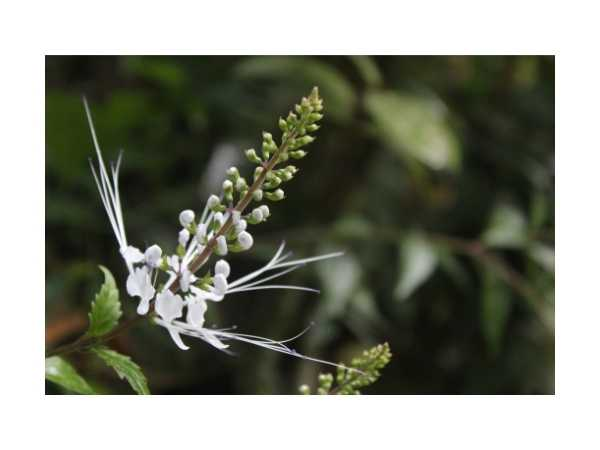

Orthosiphon aristatus
Common Names: Java Tea, Cat's Whiskers, Kidney Tea Plant, Poonai Meesai
Local Name: பூனை மீசை (Tamil), Kumari Booti (Hindi)
Family: Lamiaceae
Origin: Southeast Asia, Australia
Plant Type: Perennial herb/subshrub
Average Lifespan: Perennial; 2–4 years
| Growth Habit | Erect, branching herb or subshrub; square stems typical of mint family |
| Plant Size | 30–80 cm tall |
| Leaves | Ovate, serrated margins; opposite; aromatic when crushed |
| Flowers | White to pale purple; long protruding stamens resembling cat's whiskers; in whorled spikes |
| Root System | Fibrous root system; easily propagated from cuttings |
| Climate | Tropical to subtropical; prefers humid conditions |
| Temperature Range | 20–35°C |
| Soil Type | Well-drained, fertile loamy soil; rich in organic matter |
| Soil pH Preference | 5.5–7.0 |
| Sun Requirement | Full sun to partial shade |
| Water Requirement | Moderate; consistent moisture; avoid waterlogging |
| Can it Grow in Pots? | Yes, excellent container plant |
| Fertilizer Schedule | Monthly with compost; pinch tips to encourage bushy growth |
| Common Pests | Generally pest-resistant; occasional aphids or whiteflies |
| Propagation by Cuttings | Stem cuttings root very easily in water or moist soil; preferred propagation method |
| Water Usage | Moderate; suitable for home gardens and medicinal herb beds |
| Biodiversity Benefits | Flowers attract bees and butterflies; ornamental and medicinal value |
| Digestive Health | Leaves used as a diuretic; widely used for kidney stones and urinary tract infections |
| Anti-inflammatory Properties | Anti-inflammatory and antioxidant properties; used for gout and rheumatism |
| Heart Health | Used for hypertension and as a kidney tonic; widely used in traditional Southeast Asian medicine |
Disclaimer: Information provided is for educational purposes only and not a substitute for medical advice.
Add your field observations here.